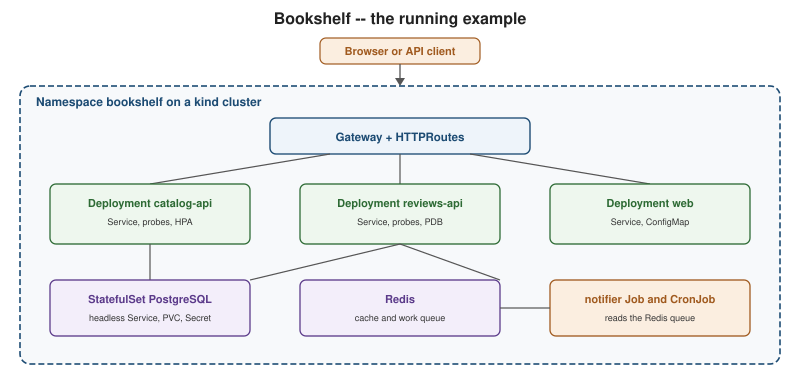

Kubernetes
|
This content was generated with the assistance of AI and should be verified against the official documentation before being relied on in production. |
Welcome to the Kubernetes reference. Kubernetes is an open-source system for running containerised applications across a fleet of machines: you describe the desired state of your application in declarative objects, and a set of controllers continuously reconciles the cluster towards that state — scheduling Pods onto nodes, replacing failed ones, rolling out new versions, balancing traffic and attaching storage. It grew out of Google’s internal Borg and Omega systems, was open-sourced in 2014 and is now the default platform for running backend services at scale.
This section is for backend developers who already build container images (see the
Docker reference) and want to learn to deploy, operate and debug those workloads
on Kubernetes, from a local kind cluster to a production cluster. It explains the concepts, the kubectl
commands and the YAML manifests, and it links every example to the official documentation that backs it.
Version baseline and release policy
The examples are written and checked against Kubernetes 1.37 (patch 1.37.1), kubectl 1.37, kind 0.33 with
kindest/node:v1.37.0, minikube 1.39, Helm 4.3, Kustomize 5.8 and Gateway API 1.6. Kubernetes ships a new minor
version roughly every four months, the project maintains release branches for the three most recent minor
versions, and each minor receives patch releases for about fourteen months; the version 1.38 release is planned
for 2026-12-16. Clients and nodes may run within a limited skew of the control plane, which
Getting Started with Kubernetes and
Cluster Setup and Administration explain in detail.
Always check the release notes and the
deprecated API migration guide before upgrading,
and see What’s Changed and Migration for what moved
since older tutorials were written.
What’s covered
Foundations
-
Introduction and Architecture — why orchestration exists, the Borg and Omega lineage, declarative reconciliation, the control-plane and node components, and when not to use Kubernetes.
-
Getting Started with Kubernetes — installing kubectl, local clusters with kind, minikube and Docker Desktop, kubeconfig contexts and the first Bookshelf deployment.
-
kubectl Essentials — command structure, output formats and selectors, logs, exec and port-forward, dry-run, diff, server-side apply, patch and plugins.
-
Objects and the Kubernetes API — the object model, API groups and versions, namespaces, labels, selectors, annotations, owner references and finalizers.
Workloads
-
Pods — the unit of scheduling, lifecycle, init containers, native sidecars, multi-container patterns, environment variables and the Downward API.
-
Health Probes and Container Lifecycle — liveness, readiness and startup probes, lifecycle hooks and graceful termination.
-
ReplicaSets and Deployments — from ReplicationController to Deployment, rolling updates, rollout commands and revision history.
-
Deployment Strategies — blue/green, canary and A/B releases with Services and Gateway API weights, plus Argo Rollouts and Flagger.
-
StatefulSets — stable identity, headless Services, volumeClaimTemplates, ordered rollouts and the Bookshelf PostgreSQL StatefulSet.
-
DaemonSets — one Pod per node for node-level agents, scheduling and update strategies.
-
Jobs and CronJobs — batch Jobs, the one-shot, fixed-completion and work-queue patterns, failure policies and CronJobs.
-
Autoscaling — HorizontalPodAutoscaler, VerticalPodAutoscaler, in-place resize, Cluster Autoscaler, Karpenter and KEDA.
Services and networking
-
Services — ClusterIP, NodePort, LoadBalancer, ExternalName, headless Services, EndpointSlices, traffic policies and kube-proxy modes.
-
DNS and Service Discovery — CoreDNS, Service and Pod DNS records, search domains, dnsPolicy and environment-variable discovery.
-
Ingress — the Ingress API, controllers, TLS, the Ingress-NGINX retirement and migrating to Gateway API.
-
Gateway API — GatewayClass, Gateway, HTTPRoute and friends, filters, weighted canary, TLS termination and ReferenceGrant.
-
Network Policies — default-deny and allow policies, DNS egress, CNI enforcement and testing.
-
Cluster Networking, CNI and Service Mesh — the network model, CNI plugins, eBPF dataplanes, dual-stack and service meshes.
Configuration and storage
-
ConfigMaps — creating and consuming ConfigMaps, update propagation and immutable ConfigMaps.
-
Secrets — Secret types, encryption at rest, consumption, RBAC and external secret stores.
-
Volumes and Ephemeral Storage — emptyDir, hostPath, projected, generic and CSI ephemeral volumes and ephemeral-storage limits.
-
Persistent Volumes and Storage Classes — PV and PVC binding, StorageClasses, dynamic provisioning, CSI, snapshots and volume expansion.
Resources, scheduling and security
-
Resource Management — requests and limits, QoS classes, LimitRange, ResourceQuota and right-sizing.
-
Scheduling and Disruptions — the scheduler, affinity, taints and tolerations, topology spread, PodDisruptionBudgets and drain.
-
Dynamic Resource Allocation and Devices — device plugins, Dynamic Resource Allocation for GPUs and RuntimeClass.
-
Authentication, Authorization and RBAC — authentication, ServiceAccount tokens, Roles and bindings and least-privilege examples.
-
Pod Security — securityContext, Pod Security Standards and Admission, and image supply-chain checks.
-
Admission Control and Policy — admission controllers, ValidatingAdmissionPolicy, webhooks, Kyverno, Gatekeeper and API Priority and Fairness.
Packaging, delivery and extending
-
Kustomize — bases, overlays, patches, generators and a Kustomize versus Helm decision table.
-
Helm — charts, releases, the template language, dependencies, hooks and the Helm 3 to 4 changes.
-
GitOps and CI/CD — Argo CD, Flux, GitHub Actions pipelines, digest pinning and secrets in GitOps.
-
Custom Resources and Operators — CustomResourceDefinitions, controllers, the operator pattern, Kubebuilder and kubectl plugins.
Operations
-
Observability: Logging, Metrics and Tracing — logs, events, metrics-server, kube-prometheus-stack, OpenTelemetry and tracing.
-
Debugging and Troubleshooting — a systematic debugging flow, kubectl debug and a table of failure states.
-
Cluster Setup and Administration — kubeadm, high availability, upgrades, version skew, etcd backup and certificate rotation.
-
Managed Kubernetes and Distributions — bare metal versus managed services, AKS, EKS, GKE, OpenShift, k3s, Talos and multi-cluster management.
Putting it together
-
Stateful Applications in Practice — external databases, reliable singletons, a replicated Redis StatefulSet, operators and backups.
-
Bookshelf End to End — the complete Bookshelf application from an empty kind cluster to a hardened, packaged and delivered stack.
-
What’s Changed and Migration — what changed since older books and tutorials, API removals and finding deprecated APIs.
Reference
-
Kubernetes Cheat Sheet — a one-page, printable summary of the whole section, with a downloadable PDF.
Running example
Every example in this section deploys the same small application, Bookshelf, on a local kind cluster: a
catalog-api, a reviews-api and a web Deployment, PostgreSQL as a StatefulSet, Redis, and a notifier that
runs as a Job, a CronJob and a worker. Container images are neutral placeholders such as
ghcr.io/example/bookshelf-catalog-api:1.0.0 and postgres:18, so nothing depends on real published images. The
scenario grows page by page and is assembled in Bookshelf End to
End.

New here? Read in this order: Introduction and Architecture, Getting Started with Kubernetes, kubectl Essentials and Objects and the Kubernetes API; then Pods, ReplicaSets and Deployments and Services; next ConfigMaps, Secrets and Persistent Volumes and Storage Classes; then the security and scheduling pages, starting with Resource Management; then packaging, delivery and extending, with Kustomize, Helm, GitOps and CI/CD and Custom Resources and Operators; then operations, starting with Observability: Logging, Metrics and Tracing and Debugging and Troubleshooting; and finally Bookshelf End to End.
Related material on this site
This section does not repeat material that already has a home. The pages below cover neighbouring topics, and the Kubernetes pages link to them instead of re-explaining them.
| Existing page | What it covers | Relationship to this section |
|---|---|---|
Docker reference (especially Orchestration, Registries and Docker Hub, Image Best Practices and Java and Spring Boot Images) |
Images, Dockerfiles, registries, Compose and Swarm |
The Kubernetes pages link here for building and pushing images and do not re-explain containers or Dockerfiles. Compose in Practice covers moving from Compose to Kubernetes. |
AKS Clusters and AKS Microservices (with Key Vault and Gateways and Load Balancing) |
AKS cluster creation and operation, Azure ingress and Gateway API options, workload identity |
Linked from Managed Kubernetes and Distributions. The AKS pages cover only Azure specifics. |
The Quarkus Kubernetes extension, generated manifests, OpenShift, the Fabric8 client and the Operator SDK |
Linked from the Bookshelf, operators and distributions pages. |
|
Spring Boot Configuration and Profiles, Metrics and Observability and Logging |
Spring Boot on Kubernetes: ConfigMaps and Secrets, Actuator liveness and readiness |
Linked from the ConfigMaps, probes and observability pages as the application-side view. |
cAdvisor, |
The observability page links it and does not repeat Prometheus service discovery. |
|
The Redis operator |
Linked from the stateful-applications page. |
|
.NET Aspire compared with Compose and Kubernetes |
Linked from the Bookshelf end-to-end page. |
|
API Gateway and BFF and Migration Path: Monolith to Microservices |
Gateways and microservice architecture |
Linked from the Gateway API page and the introduction. |
Several related references do not exist yet and are mentioned here only in prose: issue #163 (AWS and EKS), issue #164 (Google Cloud and GKE), issue #199 (FastAPI with its Docker and Kubernetes page), issue #184 (API managers, secret managers, gateways and scaling) and issue #201 (a cloud providers comparison). The EKS and GKE pages are expected to cover only provider-specific concerns and to defer generic Kubernetes to this section. Terraform, including its Kubernetes and Helm providers, is covered in Terraform.
Source: Kubernetes Docs — Overview.
Bibliography
Every source used to write this section is listed below, each linked to its official website. The books were consulted for the concept narrative, the structure and the bibliography only; neither is the primary source for any command or manifest, and no text, listing or figure is copied from them. Every example is written against the current official documentation. Where a book and the official documentation disagree, the official documentation wins.
Books
-
Rensin, D. K. Kubernetes: Scheduling the Future at Cloud Scale. O’Reilly Media, first edition, June 2015. ISBN 978-1-491-93188-2. O’Reilly publisher page (also the O’Reilly article). A short, code-free primer from the Kubernetes 1.0 era; its mental model is lasting but its API details are badly out of date.
-
Hightower, K., Burns, B. and Beda, J. Kubernetes: Up and Running — Dive into the Future of Infrastructure, 1st edition. O’Reilly Media, September 2017. ISBN 978-1-491-93567-5. O’Reilly publisher page. The copy consulted was the free sponsor sampler containing only five of the book’s chapters, not the full book. The current edition is the 3rd edition (2022), available at the O’Reilly 3rd-edition page. Its manifests target Kubernetes 1.5 to 1.7 and the retired
extensions/v1beta1andapps/v1beta1APIs.
Official Kubernetes documentation
The documentation entry point is kubernetes.io/docs. It is organised as follows.
-
Concepts, by area: Overview, Cluster Architecture, Containers, Workloads, Services, Load Balancing and Networking, Storage, Configuration, Security, Policies, Scheduling, Preemption and Eviction, Cluster Administration, Windows in Kubernetes and Extending Kubernetes; resource management is covered under Resource Management for Pods and Containers.
-
The Kubernetes API reference, the kubectl reference and the kubectl quick reference.
-
The deprecated API migration guide and the deprecation policy.
-
Feature gates and the kubeadm reference.
-
Releases, patch releases and the version skew policy.
-
The Kubernetes blog with its release announcements, and the changelogs.
-
Kubernetes on GitHub and the Kubernetes Enhancement Proposals (KEPs).